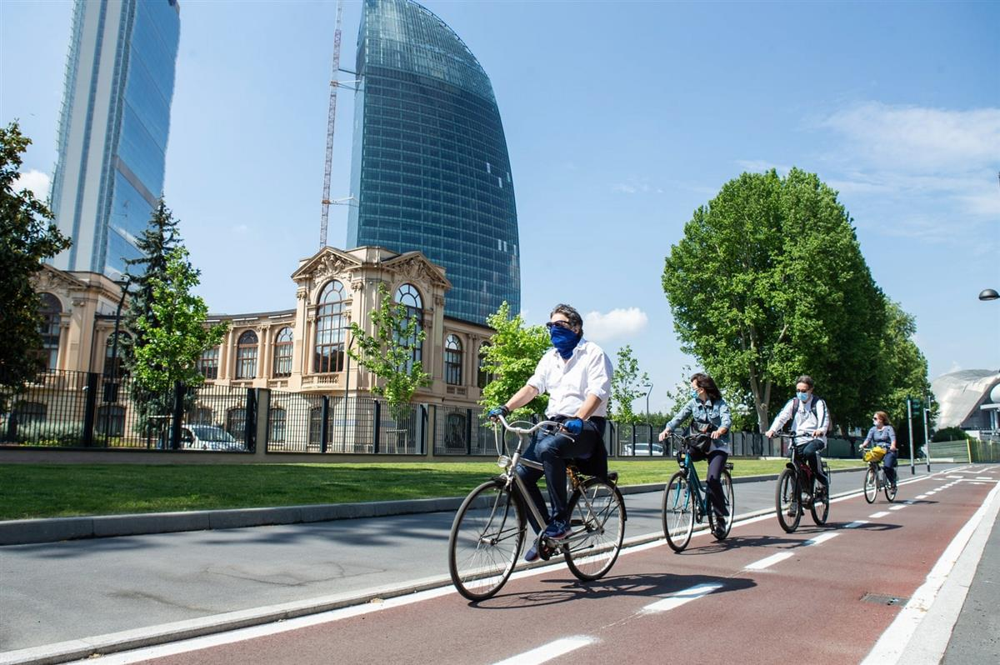
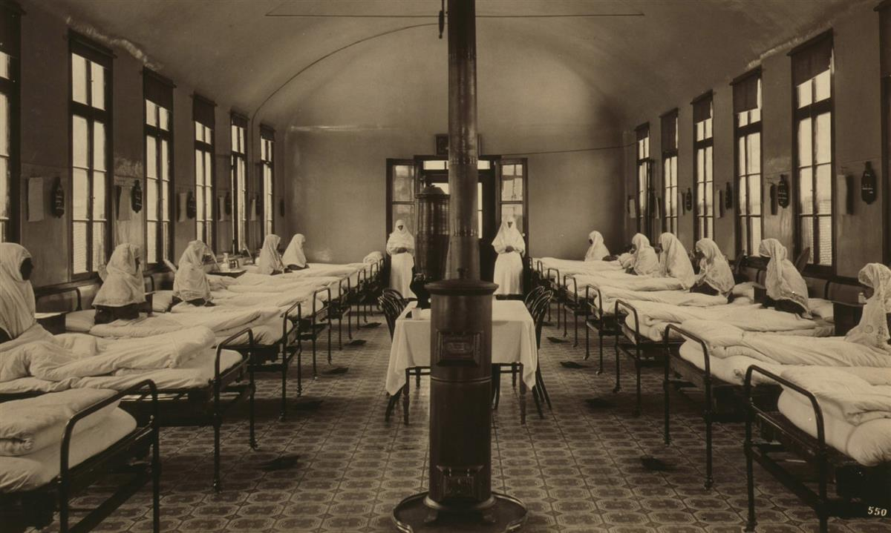
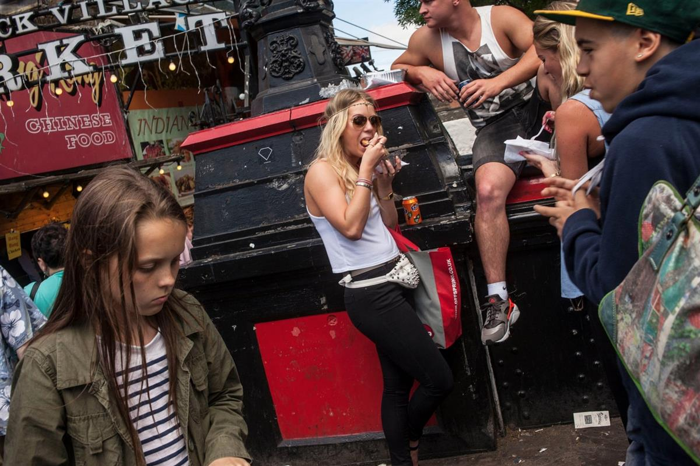
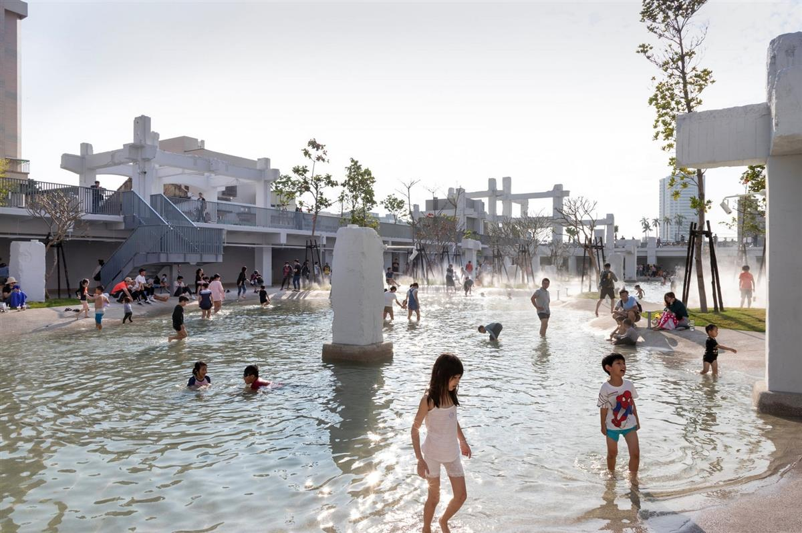

Grey’s monument in Newcastle. The street will now be given over to cyclists and pedestrians in an attempt to keep car use low once restrictions are lifted. Photograph: Owen Humphreys/PA
Grey’s monument in Newcastle. The street will now be given over to cyclists and pedestrians in an attempt to keep car use low once restrictions are lifted. Photograph: Owen Humphreys/PA
Sun 24 May 2020 09.00 BST
Around the world, cities are cleaner and quieter. Can we reinvent them – and ensure that the changes forced upon them in the last few months are not squandered?
Covid-19 has changed the way that towns and cities look. It has offered views of public places with fewer cars and cleaner air, roads you can stroll down, cycling without danger. It has made some things seem more precious, such as green spaces and parks. It has renewed appreciation of the social infrastructures of support and care. It has heightened awareness of the ways in which one person’s actions can affect another’s. It has made everyone more conscious of the ways they occupy space in relation to other people.
It has also prompted the idea that big cities have taken a hit from which they won’t fully recover. The virus first appeared in Wuhan, population 11 million, and some of its worst outbreaks have been in New York, London, Milan and São Paulo. Crowds and public transport, goes the theory, are bad for your health. Remote working, boosted by lockdowns, will be here to stay. Balaji Srinivasan, a Silicon Valley venture capitalist summed this view up in a pithy tweet: “Sell city, buy country.”
So cities appear both more and less attractive. It’s a contradiction. To which the best response might not be a rush away from everything urban, but a less violent redistribution from one kind of city to another. For several decades wealth and population have been tending to concentrate in a few privileged urban centres, to the disadvantage both of other towns and cities – and of themselves. This has been particularly true in Britain, with its gross imbalance between London and its satellites and much of the rest of the country. What if there were a shift in intensity away from the biggest cities towards the others, such that the enjoyment of life was increased all round?

A new cycle path has been built in Milan to encourage people to use alternative transport. Photograph: Roberto Finizio/Getty ImagesMuch or most of the lockdown’s changes are temporary. But what if this crisis were not allowed to go to waste? What if the glimpses of alternative realities became guides to the future? There have already been some rapid responses both in Britain and elsewhere, such as the closing of several central London streets to traffic by mayor Sadiq Khan, the pedestrianisation of Grey Street in Newcastle and the permanent closure of Seattle streets that had been temporarily blocked.
These initiatives are welcome attempts to make selected urban areas more sociable and pleasurable. There is also the chance to steer the decentralising effects of the pandemic towards towns and cities that already have most of what it takes to support successful communities, but could do with a bit more economic and social energy. This is surely preferable to a flight towards car-dependent detached houses, scattered around rural areas that would hardly welcome them.
Some situations that were under strain before the virus have been revealed as all-but unsupportable. In the capital, there was scarce and expensive housing, air pollution, long commuting times on crowded public transport. Lockdown has made confined living conditions less tolerable while also removing the compensations of a metropolitan social life.
Elsewhere there was a lack of investment and opportunity, alongside decaying buildings and public spaces. A three-bedroom Victorian terraced house in Fulham, to take property prices as a measure, goes for at least £1m. An essentially identical house in Gateshead might sell for £100,000, in Portsmouth maybe £250,000. London is overcrowded, Doncaster is depopulated. Empty space is at a premium in the capital and in its south-eastern penumbra. In high streets across the country there is all too much of it.
Meanwhile attempts to mitigate the London-centred housing crisis have foundered on familiar rocks. Residents of green belts don’t want new homes near them. Almost any land inside London that is easy to develop has been built on by now. Property companies can’t and won’t build homes of the quantity and affordability that are needed. There are ways to confront these problems – good planning, state housebuilding, some determination – which shouldn’t be abandoned, but contemporary Britain has so far proved sluggish to adopt them.

A tuberculosis ward in Istanbul in the 1880s. The highly infectious disease made cities a killer and led to the creation of more green spaces. Photograph: Universal History Archive/Getty ImagesAnother approach is to make best use of the already-there. Ease the pressure on London and on some other mostly southern hotspots and reflate the many towns and cities that often have good housing stock, handsome if neglected high streets, a legacy of past investment in public amenities like parks and libraries, and access to beautiful countryside. Places roughly answering this description include Preston, Walsall, Sheffield, Plymouth, Colchester, Derby, Dundee, Hull, Wakefield and Wrexham, to name but a few. Such a shift would have the added environmental benefit of reducing the large costs in energy and carbon of a mass housebuilding programme.
It’s been widely pointed out, especially since the pandemic started, that modern attitudes to cities have been closely linked to health. A century or so ago, for planning theorists from Ebenezer Howard to Le Corbusier, diseases such as tuberculosis made density a killer, and so cities had to be depopulated, their teeming streets replaced with green open spaces. Patrick Abercrombie’s Greater London Plan of 1944 put these ideas into practice, directing that a large number of Londoners should be moved to healthy new towns.
Once antibiotics had pushed back TB, the virtues of city life were reasserted. Jane Jacobs celebrated these virtues in The Death and Life of Great American Cities of 1961, after which it became the creed of right-thinking urbanists that the density and vibrancy of cities were to be encouraged. Theory was eventually put into practice with spectacular success, at least in economically powerful and good-looking cities including London and New York.
Populations started growing after decades of decline, money poured in, shops and restaurants boomed, property prices soared, derelict buildings were done up. The 1980s phrase “inner-city deprivation” gave way to the estate agents’ buzz-term “urban lifestyle”. The term “world cities” came into use in the 1990s, to describe urban economies that were competing with rivals of a global scale for business and attractiveness. Cities were good. Big was good. Big cities were best.
In the process something was lost. Supercharged property prices turned cities’ best features into commodities. If Jacobs talked of the “ballet of the street” – the choreography of people of different backgrounds and trades going about their lives in shared spaces – it became hard to find in the sealed glass towers of the world cities’ newest real estate. It is more likely to be found in, well, streets, of which there are countless numbers across the country, not just in the most privileged metropolitan centres.

Crowds in London’s Camden Market during a busy weekend before the coronavirus outbreak. Jane Jacobs celebrated the ‘ballet of the street’ found in cities’ shared spaces. Photograph: Antonio Olmos/the ObserverSo the proposition is not to rush from dense city to atomised exurb. Rather it is to encourage an adjustment of priorities towards towns and cities in general. It is not about mass internal migration but about incremental change. Most people will stay where they are. Most people’s lives will not be transformed by remote working. But for at least some people, some of the time, the advantages of online interactions will outweigh the disadvantages. It might mean that you only need to visit a big-city office once a week, for example, rather than every day.
It should be possible to imagine that Person A decides that the possibility of having a house and a garden outweighs the attractions of the big city. The development of remote working makes this a little more possible. Perhaps there are enough people like her to form a social network in her area, perhaps she persuades some friends to join her. Their choices might be influenced by the rediscovery, during the lockdown, of activities that don’t require a sophisticated urban pleasure dome within easy reach: cooking, talking to family or friends, going to shops that are not supermarkets, tending a garden, online socialising and entertainment. They might be less driven than before by the prestige and desirability of a metropolis.
Perhaps they work for companies who see the benefits of helping their employees live like this, or who spread their operations around regional bases more than they would have done previously. Perhaps they make an empty shop into a shared workspace and meeting place. A cafe, you could call it. Perhaps this helps to bring some life back to a high street. They would not be moving into a void, but into an existing set of businesses and activities, with which they could be mutually supportive.
Such a shift won’t happen all by itself. Successful high streets, as the Centre for Cities thinktank has shown, are symptoms of more general strengths in local economies. Brighton, York and Cambridge were doing just fine before the pandemic, and are the most likely places to bounce back; Newport, Bradford and Wigan less so. It will, as well as the resourcefulness of individuals and companies, require some positive contributions from government.

The water garden at Tainan Spring in Taiwan was created from an old shopping mall. Photograph: Daria ScagliolaPartly this would be a matter of supporting those things that support quality of life – parks, nurseries, street maintenance. Reversing austerity, you could call it. Partly it would be a case of investing in local transport systems and broadband. It would require creative use of the planning system – not just allowing individuals to convert shops into homes, which can create poor homes and inactive streets, but encouraging initiatives that work out new futures for whole streets at a time. Vacant shopping centres should be taken into public ownership so that, as happened with empty docklands in the 1980s, they can be made available to whoever might make the most of them. Versions of Tainan Spring in Taiwan, where an old shopping mall was made into a water garden, could be realised in Britain.
The vast financial and environmental costs of projects like HS2 and Heathrow’s third runway, together with the long time they will take to deliver any kind of return, now look – in a future that will definitely be poorer than expected – preposterous. Their main effect would be to bring more people from less-favoured parts of the country to the more favoured. It would be far better to spend the tens of billions they require on local and regional projects. Rather than bring people to where the work is, the plan should be to bring work to people, wherever they are.
This is hardly a new idea. Its most recent manifestation has been the Conservative party’s policy of “levelling up” the British regions. Last year the government launched a future high streets fund as a gesture in this direction, although its £1bn budget is very much smaller than the sums previously extracted through austerity. The overheating of London has already been causing people to live further out – commuters using improved trains from Rugby, creatives relocating to Margate. These changes might be seen as the enlargement of London’s orbit, but they at least tend towards greater decentralisation.
Other future developments might help this transfer of energy from world cities to urban settlements in general. Cars that are both driverless and electric could, for example, by using road space in a more efficient and less polluting way, allow urban density without centralised public transport systems. A virus can’t change city planning all by itself, but it can be used as a chance to push changes whose time has come.
SOURCE: THE OBSERVER